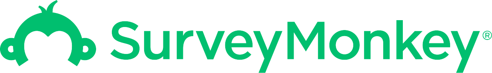

Steffie Kim, Ph.D.
Quantitative User Researcher @ thatgamecompany
I lead quantitative and mixed-methods research to inform product and design decisions in game development. My work focuses on analyzing player behavior and engagement through large-scale telemetry, surveys, and qualitative methods, translating complex data into actionable insights for designers, engineers, and leadership. I am driven by a deep interest in how people engage with interactive media and by applying research to create player-centered experiences with meaningful impact.Key Skills



Portfolio
Selected publicly shareable projects.
NDA-restricted projects available upon request.
 Survey & Behavioral Data Analysis
Survey & Behavioral Data Analysis
 Interactive Time Series Dashboard
Interactive Time Series Dashboard
 A/B testing
A/B testing
 Interviews & Thematic Analysis
Interviews & Thematic Analysis
 Online Experiment
Online Experiment
 Multilevel Modeling
Multilevel Modeling
Publications
Tang, J. L., Liu, M., Bisberg, A. J., Kim, S. S. Y., & Williams, D. (2026). Intergroup contact, contact heterogeneity, and cross-group friendship: Evidence from a global prosocial mobile game. Journal of Computer-Mediated Communication.
Download
Nan, Y., Qin, J., Li, Z., Kim, N. G., Kim, S. S. Y., & Miller, L. C. (2024). Is social media use related to social anxiety? A meta-analysis. Mass Communication and Society.
Download
Xu, Y., Wang, Y., Kim, S. S. Y., Kim, D., & McLaughlin, M. L. (2023). Safe at home: Acceptance of surveillance technology among caregivers for persons with dementia. Health Informatics, 29(1), 1-17.
Download
Kim, S. S. Y., Huang-Isherwood, K. M., Zheng, W., & Williams, D. (2022). The art of being together: How coplay can increase reciprocity, social capital, and social status in a multiplayer online game. Computers in Human Behavior, 133, 107291.
Download
Huang-Isherwood, K. M., Kim, S. S. Y., Bisberg, A. J., & Williams, D. (2022). Las mujeres sostienen (más de) la mitad del cielo: examinando las motivaciones, los comportamientos y el capital social en un juego multijugador popular entre las jugadoras [Women hold up (more than) half of the sky: Examining gameplay motivations, behaviors, and social capital in a multiplayer game popular among female players]. Revista Internacional de Sociología, 80(4), 1-18.
Download
Kim, S. S. Y., Liu, M., Qiao, A., &, Miller, L. C. (2021). “I want to be alone, but I don’t want to be lonely”: Uncertainty management regarding social situations among college students with social anxiety disorder. Health Communication, 37(13), 1-11.
Download
Jeong, D. C., Kim, S. S. Y., Xu, J. J., & Miller, L. C. (2021). Protean kinematics: A blended model of physical and virtual physics in VR. Frontiers in Psychology, 12, 1-17.
Download
Sun, Y., Kim, H. M., Xu, Y., Wang, Y., Kwong, J., Kim, S. S. Y., Kim, D. O., McLaughlin, M. (2021). GPS tracking in dementia caregiving: Social norm, perceived usefulness, and behavioral intent to use technology. Proceedings of the 54th Hawaii International Conference on System Sciences.
Download